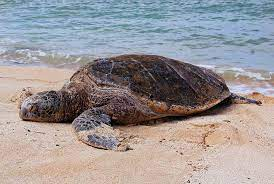

There are approximately 356 species of turtles living on land—on all continents on Earth except Antarctica—and in both salt water and fresh water. The greatest number of species occur in southeastern North America and in South Asia.
Photo by: Matthew Brodeur from unsplash.com